Дино-раскраска: раскрась любого — он оживёт!
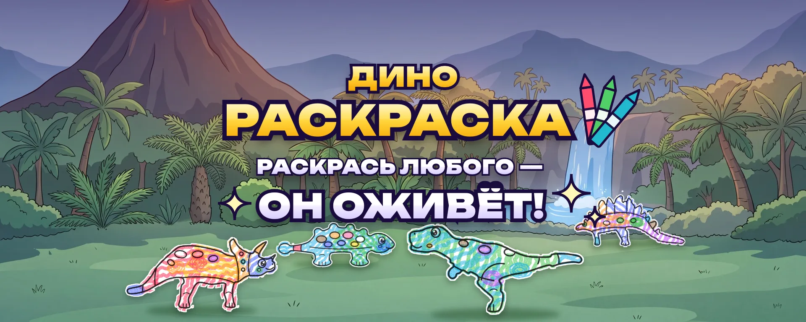
Ребёнок раскрашивает динозавра на бумаге. Вы фотографируете лист телефоном — и динозавр выбегает на экран телевизора.
Как играть — по шагам
- 1Откройте игру на телевизоре
Включите браузер на телевизоре (или на компьютере, подключённом к ТВ) и откройте игру. На экране — долина с белыми динозаврами: они ждут красок.
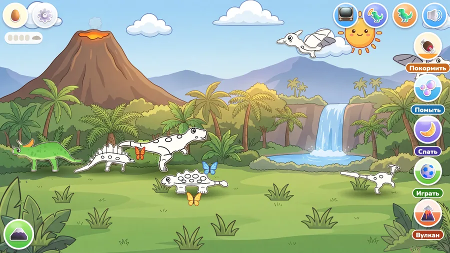
- 2Распечатайте лист
Нажмите на белого динозавра — откроется его карточка. Нажмите «Распечатать». Выйдет лист с этим динозавром и QR‑кодом.
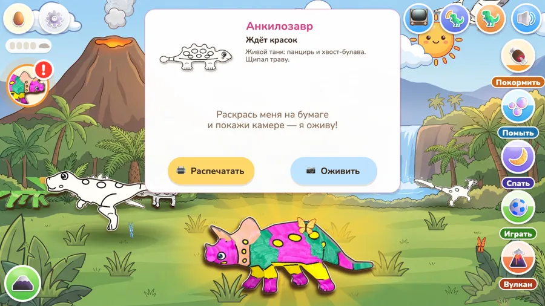
- 3Раскрасьте
- Лучше всего цветные карандаши, можно фломастеры и мелки тонким слоем
- Не закрашивайте 4 чёрных квадратика по углам и QR‑код — по ним игра находит лист
- Не мните и не складывайте лист
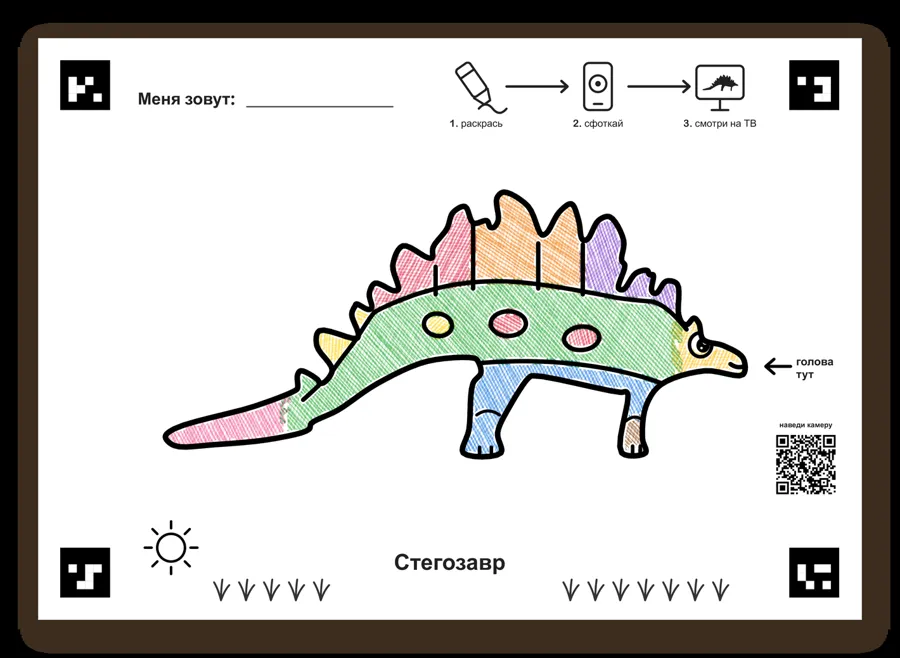
- 4Наведите телефон на QR‑код
Откройте камеру телефона и наведите на QR‑код на листе — откроется съёмка. Положите лист на стол и сфотографируйте целиком, сверху, при свете.
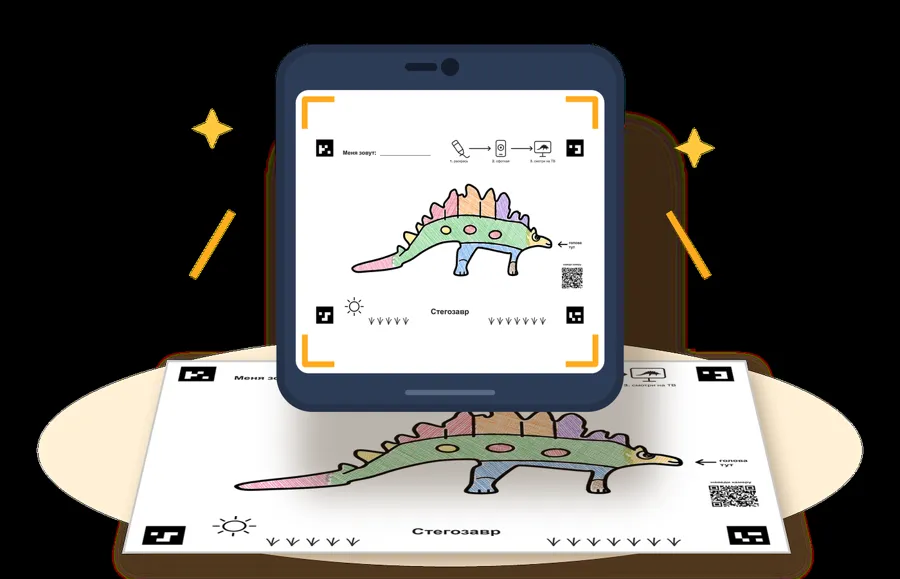
- 5Динозавр оживает
Через пару секунд ваш динозавр выбегает на экран телевизора — с теми же цветами, что на рисунке. Его можно кормить, мыть, укладывать спать и играть с ним.
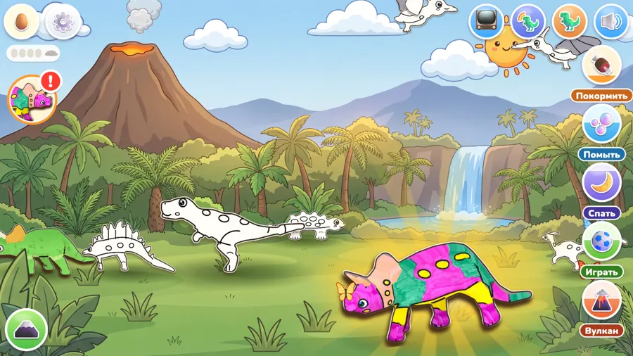
Если не получилось
Раскраски
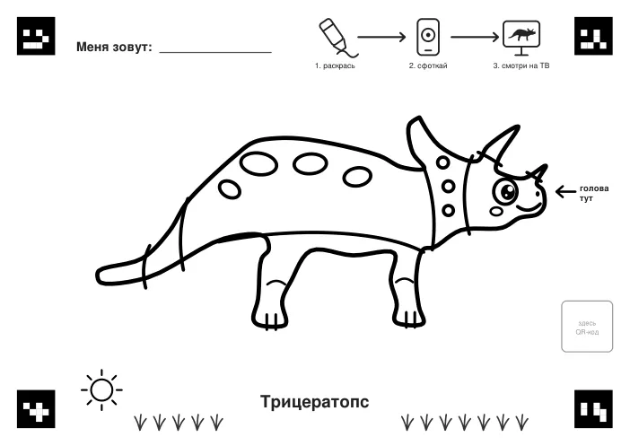
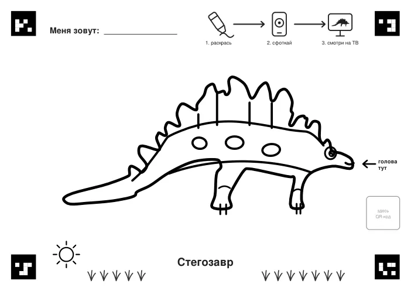
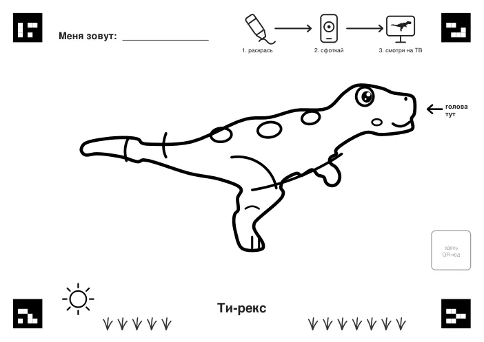
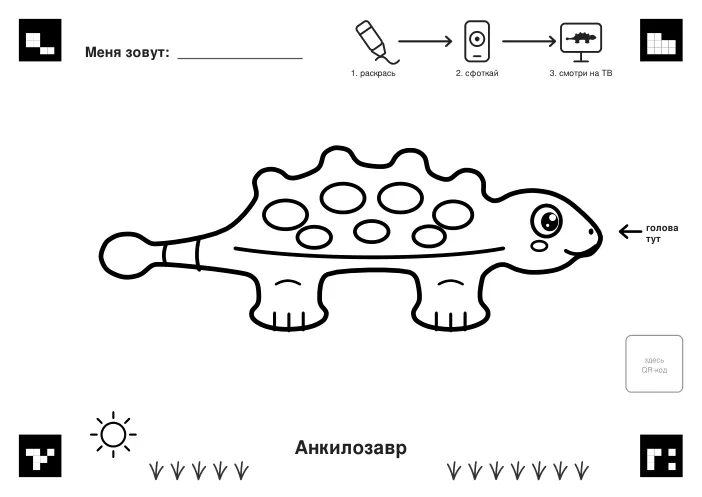
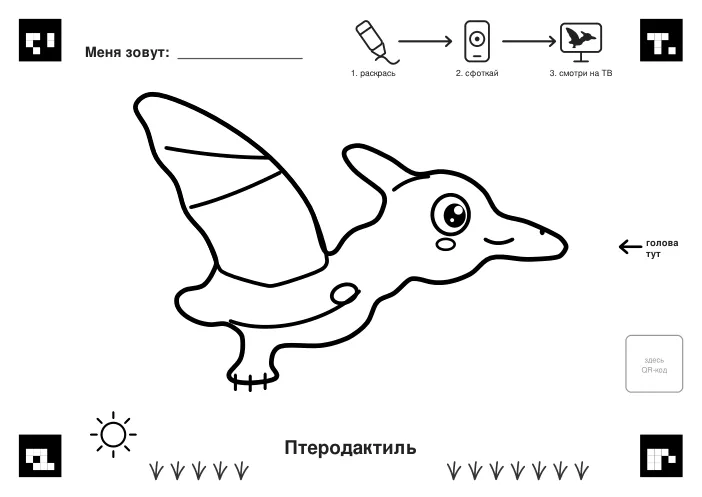
Эти листы можно распечатать и раскрасить. Чтобы динозавр ожил на экране, распечатайте лист из самой игры (шаг 2): на нём QR‑код вашей долины.
Вопросы и ответы
Что нужно для игры?
Телевизор с браузером или компьютер, телефон с камерой, принтер и один Wi‑Fi дома.
На каком экране бегает динозавр?
На телевизоре или компьютере. На телевизоре лучше всего: ребёнок видит своего динозавра большим.
Можно без принтера?
Пока нет: игра оживляет только раскрашенный бумажный лист.
Безопасно ли фотографировать?
Да. Вы снимаете только рисунок на бумаге, не ребёнка и не комнату.